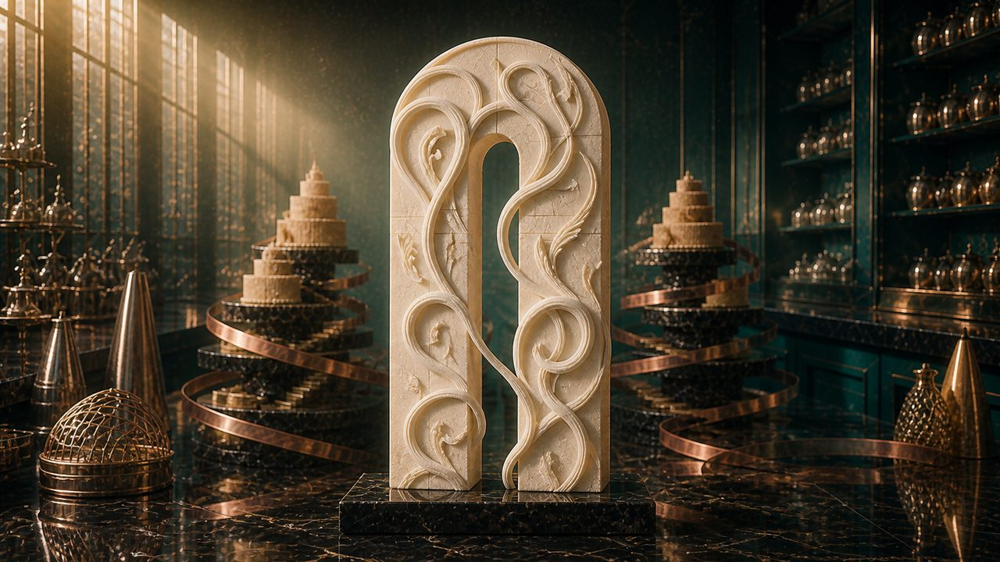
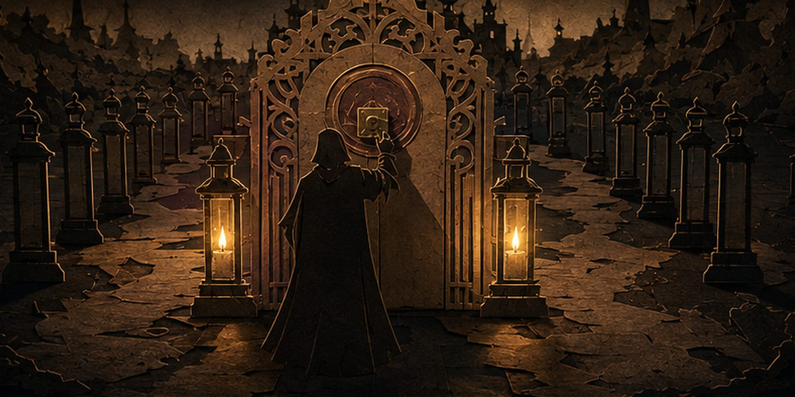

Mohamed Mahmoud Picturesاستوديو محمد محمودFifth edition · 70 WAN shotsالإصدار الخامس · ٧٠ لقطة WAN
The Worldsالعوالم
Nine motion studies, cut as scroll-controlled films. Cake Studio's new Edible Compiler links 50 real WAN 2.7 First & Last Frame shots into a 4:10 reversible production journey. The Disney Storybook world contributes another 20-shot chain; seven further worlds render their mechanisms live in code. Every film carries its own bilingual truth, studio ident and end credits. Scroll each one like a reel.تسع دراسات حركية مقصوصة كأفلام يقودها التمرير. يربط «المُصرِّف الصالح للأكل» الجديد في عالم استوديو الكعك ٥٠ لقطة حقيقية من WAN 2.7 بإطار أول وأخير في رحلة إنتاج قابلة للعكس مدتها ٤:١٠. ويضيف عالم الحكاية المصورة سلسلةً أخرى من ٢٠ لقطة، بينما تعرض سبعة عوالم أخرى آلياتها حيّة بالشيفرة. لكل فيلم حقيقته الثنائية اللغة وشعار استوديو وشارة نهاية. مرِّر في كل واحد كأنه شريط فيلم.
Original studies · no third-party marks · all real numbers live on the story pages · ← → step scenes inside any filmدراسات أصلية · بلا علامات لأطراف ثالثة · الأرقام الحقيقية كلها في صفحات القصص · السهمان ← و→ ينقلان بين المشاهد داخل أي فيلم


The Projection Boothغرفة العرض
How nine films run on zero dependenciesكيف تعمل تسعة أفلام بلا أي اعتماديات
Everything on this floor is projected by one hand-written engine. No frameworks, no libraries, no build step — the same discipline as the systems on the portfolio: small, inspectable, and honest about what it does.كل ما في هذا الطابق يُعرَض بمحرّكٍ واحد مكتوبٍ يدويًّا. لا أُطر عمل، ولا مكتبات، ولا خطوة بناء — الانضباط نفسه الذي بُنيت به الأنظمة في الموقع: صغيرٌ، قابلٌ للفحص، وصادقٌ فيما يفعل.
The rendered platesاللقطات المُصيَّرة
The original eight-world suite carries 32 rendered plates — four per world, from a wide establishing move through build, gate and resolution. Real Cycles path tracing: modelled geometry, physically-based materials, a physical camera, depth of field and volumetric light, rendered on an RTX 5070 Ti over OptiX. Cake Studio joins the floor as a separate 50-shot WAN production with three live-code proof scenes.تحمل مجموعة العوالم الثمانية الأصلية ٣٢ لقطة مُصيَّرة — أربعًا لكل عالم، من لقطة تأسيسية واسعة إلى البناء والبوابة والحل. تتبُّع مسار حقيقي في Cycles: هندسة منمذجة ومواد فيزيائية وكاميرا حقيقية وعمق ميدان وضوء حجمي، صُيِّرت على بطاقة RTX 5070 Ti عبر OptiX. وينضم استوديو الكعك كإنتاج WAN مستقل من ٥٠ لقطة مع ثلاثة مشاهد إثبات حيّة بالشيفرة.
The engineالمحرّك
cinema.js — one passive scroll listener + requestAnimationFrame; CSS custom properties are the animation bus. Scenes get a --p progress value from 0 to 1 and the stylesheets do the cinematography.cinema.js — مستمعُ تمريرٍ سلبيّ واحد مع requestAnimationFrame؛ ومتغيّرات CSS هي ناقلُ الحركة. يتلقّى كل مشهدٍ قيمةَ تقدّمٍ --p من صفر إلى واحد، وتتولى أوراقُ الأنماط التصويرَ السينمائي.
The footageالمشاهد المصوَّرة
70 real WAN 2.7 shots now run on this floor: Cake Studio's complete 50-shot endpoint-locked chain and Disney Edition II's 20-shot storybook chain. Both are scrubbed by the visitor's scroll, forward and reverse, and neither autoplays. The remaining seven worlds use live code and rendered plates.تعمل في هذا الطابق الآن ٧٠ لقطة حقيقية من WAN 2.7: سلسلة استوديو الكعك المكتملة ذات ٥٠ لقطة مقفلة النهايات، وسلسلة الحكاية المصورة ذات ٢٠ لقطة. يقود تمرير الزائر السلسلتين أمامًا وخلفًا، ولا تعمل أي منهما تلقائيًا. وتستخدم العوالم السبعة الباقية الشيفرة الحيّة واللقطات المُصيَّرة.
The projectorآلة العرض
Videos load poster-first and lazy; the next clip prefetches while the current one plays; scenes far from the viewport skip their maths. Second edition adds projector mattes, a running slate with timecode, a scene tick rail, and ← → keyboard stepping.تُحمَّل المقاطع بالملصق أولًا وعند الاقتراب فقط؛ ويُجلَب المقطع التالي مسبقًا أثناء تشغيل الحالي؛ وتتخطى المشاهدُ البعيدة عن الشاشة حساباتها. ويضيف الإصدار الثاني ستارَي العرض، ولوحَ تصويرٍ جارٍ برمزٍ زمني، ومسطرةَ مشاهدَ جانبية، وتنقّلًا بالمفتاحين ← ←.
The languagesاللغتان
Every caption is authored twice — English and Arabic in the same DOM — and one toggle swaps language and direction live. One truth, two scripts.كل تعليقٍ مكتوبٌ مرتين — بالإنجليزية والعربية في الشجرة نفسها — وزرٌّ واحد يبدّل اللغةَ والاتجاه حيًّا. حقيقةٌ واحدة بخطّين.
The safety railsقضبان الأمان
Keyboard focus stays visible; no third-party marks, characters or product replicas appear anywhere on this floor. Cake Studio and Disney deliberately keep one scroll-controlled cut on desktop and phone: no mobile-lite edition, no autoplay substitute.يبقى تركيز لوحة المفاتيح ظاهرًا؛ ولا تظهر في هذا الطابق علامات أو شخصيات أو نسخ منتجات لأطراف ثالثة. ويحافظ استوديو الكعك والحكاية المصورة عمدًا على قصٍّ واحد يقوده التمرير على الحاسوب والهاتف: بلا إصدار هاتف مخفف ولا بديل يعمل تلقائيًا.
Also from this studioمن الاستوديو نفسه أيضًا
The real work behind the fictionالعمل الحقيقي وراء الخيال
The worlds are craft demonstrations. These are the shipped, public systems they advertise — every claim below matches the public repository it links to.العوالم عروضُ حِرفة. وهذه هي الأنظمة العلنية المُنجَزة التي تُعلن عنها — وكل وصفٍ أدناه مطابق للمستودع العلني الذي يشير إليه.
- The Portfolioالموقع الرئيس Open →افتح ← This site — a bilingual Astro 5 build with 11 project story pages, an aurora hero, six switchable themes and every number sourced from one data file.هذا الموقع — بناءُ Astro 5 ثنائيُّ اللغة يضم ١١ صفحة قصةِ مشروع، وواجهةَ شفقٍ متحركة، وستة أنماطٍ قابلة للتبديل، وكلُّ رقمٍ فيه مصدرُه ملفُّ بياناتٍ واحد.
- God Mode Portfolio GitHub → One Astro codebase, seven distinct brand-identity studies plus a themed hub.قاعدة Astro واحدة، وسبع دراسات هوية بصرية متمايزة مع بوابةٍ موحَّدة.
- Flagship One-Page GitHub → A bilingual Arabic/English scroll-driven portfolio: nine real marketing, operations and automation systems in one self-contained site.موقعُ صفحةٍ واحدة ثنائيُّ اللغة يقوده التمرير: تسعة أنظمة حقيقية في التسويق والتشغيل والأتمتة في موقعٍ مكتفٍ بذاته.
- Polyblast Arena GitHub → An original Godot 4.7 arena FPS with a 60 Hz authoritative simulation, bots, 4 maps, 9 weapons, and a procedural Blender asset pipeline.لعبة تصويبٍ أصلية على Godot 4.7 بمحاكاةٍ مرجعية ٦٠ هرتز، وروبوتات، و٤ خرائط، و٩ أسلحة، وخطِّ أصولٍ إجرائي على Blender.
- AI Automation Command Center GitHub → A self-contained retail AI automation, integration, KPI, reporting and alert command center.مركزُ قيادةٍ مكتفٍ بذاته لأتمتة الذكاء الاصطناعي في التجزئة: تكامل ومؤشرات وتقارير وتنبيهات.
- Retail Ops Hub GitHub → A dependency-free retail operations command centre demo — POS, commerce, inventory and alerts in one local SQLite-backed web app, on synthetic data.عرضُ مركزِ عملياتِ تجزئةٍ بلا اعتماديات — نقاطُ بيعٍ وتجارةٌ ومخزونٌ وتنبيهات في تطبيق ويب محليٍّ يقوم على SQLite، ببياناتٍ اصطناعية.
- Cake Studio Demo GitHub → An offline cake design-to-production demo with a WebGL editor, procedural assets, Arabic shaping and true-size print layouts.عرضٌ يعمل دون اتصال من تصميم الكعك إلى إنتاجه: محرّر WebGL، وأصولٌ إجرائية، وتشكيلُ حروفٍ عربي، ومخططاتُ طباعةٍ بالحجم الحقيقي.
- Everything publicكل ما هو علني github.com/Mohamed3042 → The full public profile — including this site's own source.الملف العلني كاملًا — بما فيه مصدرُ هذا الموقع نفسه.